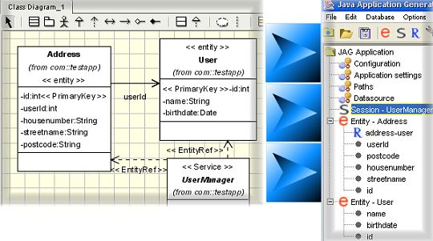

The import function can be found under the File menu, or it also accessible from the keyboard using
the shortcut CTRL-I. You will be presented with a file chooser dialogue, from which you should select the XMI file that you
saved from the UML modelling tool.
JAG will read in the data from the UML model and, if you have followed the correct usage of stereotypes outlined in the previous step, you should then see the entities and services from the model appear in the left-hand side of the JAG application.

File menu that there is an 'Export UML model..' function.
This enables you at any stage to export the application back to your UML modelling tool by saving an XMI file.
| Previous step: Create the UML class diagram |
| Next step: Application configuration |